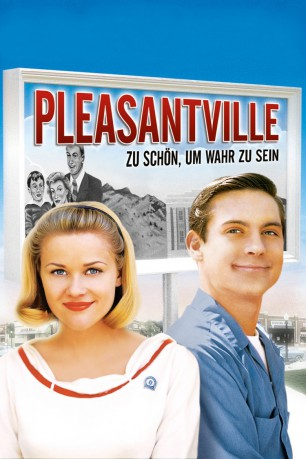

#2005 Pleasantville - Zu schön, um wahr zu sein
Alternativ: Pleasantville
Auszeichnungen: für 3 Oscars nominiert
 
 IMDB-Wertung: 7.5 / 10
IMDB-Wertung: 7.5 / 10  Metascore: 71
Metascore: 71 
Als die Teenager David und Jennifer aus den 90er-Jahren zurück in die 50er-Jahre und in die perfekte Vorstadtidylle der schwarzweißen Sitcom Pleasantville gezappt werden, beginnt ein „visionäres Abenteuer“. Zu den perfekten Bewohnern von Pleasantville gehören der sanftmütige Mann hinterm Tresen, eine gesellschaftlich unterdrückte Mutter und ein Vater, der immer Recht hat. Doch wenn die Popkultur der 90er mit den Familienwerten der 50er kollidiert, entsteht ein Chaos, das den Ort Pleasantville auf den Kopf stellt … bis Farbe den schwarzweißen Alltag zum Leuchten bringt.
Jahr: 1998
Dauer: 124 Minuten
FSK: 6
Land: USA Studio: New Line CinemaTonspuren: DD5.1 - ,
Untertitel: Englisch,
Auflösung: 1080p (1920x1080) Größe: 9349 MB
Genre: Drama, Komödie, Fantasy
Regisseur:  Gary Ross
Gary Ross
Drehbuch: Gary Ross
Soundtrack: Randy Newman
Darsteller:
 Tobey Maguire als David
Tobey Maguire als David Reese Witherspoon als Jennifer
Reese Witherspoon als Jennifer William H. Macy als George Parker
William H. Macy als George Parker Joan Allen als Betty Parker
Joan Allen als Betty Parker Jeff Daniels als Bill Johnson
Jeff Daniels als Bill Johnson J.T. Walsh als Big Bob
J.T. Walsh als Big Bob Don Knotts als TV Repairman
Don Knotts als TV Repairman Marley Shelton als Margaret Henderson
Marley Shelton als Margaret Henderson Jane Kaczmarek als David's Mom
Jane Kaczmarek als David's Mom- Giuseppe Andrews als Howard
- Jenny Lewis als Christin
- Marissa Ribisi als Kimmy
 Denise Dowse als Health Teacher
Denise Dowse als Health Teacher McNally Sagal als Science Teacher
McNally Sagal als Science Teacher- Natalie Ramsey als Mary Sue Parker
 Kai Lennox als Mark's Lackey #1
Kai Lennox als Mark's Lackey #1- Jason Behr als Mark's Lackey #2
- Robin Bissell als Commercial Announcer
 Paul Walker als Skip Martin
Paul Walker als Skip Martin- Dawn Cody als Betty Jean
 Maggie Lawson als Lisa Anne
Maggie Lawson als Lisa Anne Andrea Baker als Peggy Jane
Andrea Baker als Peggy Jane Marc Blucas als Basketball Hero
Marc Blucas als Basketball Hero- Stanton Rutledge als Coach
 Gerald Emerick als TV Weatherman
Gerald Emerick als TV Weatherman Charles C. Stevenson Jr. als Dr. Henderson
Charles C. Stevenson Jr. als Dr. Henderson Nancy Lenehan als Marge Jenkins
Nancy Lenehan als Marge Jenkins- Weston Blakesley als Gus
 Jim Antonio als Ralph
Jim Antonio als Ralph Danny Strong als Juke Box Boy
Danny Strong als Juke Box Boy- Erik MacArthur als Will
- David Tom als Whitey
 Jeanine Jackson als Woman
Jeanine Jackson als Woman- J. Patrick Lawlor als Thug
 James Keane als Police Chief Dan
James Keane als Police Chief Dan- Randy Springer als Towns Person , uncredited
- Meredith Thomas als Girl in Soda Shop , uncredited
- Paul Morgan Stetler als College Counselor
- Heather McGill als Girl in School Yard
- Kevin Connors als Bud Parker
- Justin Nimmo als Mark Davis
- Harry Singleton als Mr. Simpson
- John Ganun als Fireman #1
- Lela Ivey als Miss Peters
- Jim Patric als Tommy
- Jason Maves als Paperboy
- Patrick Thomas O'Brien als Roy
- Kristin Rudrüd als Mary
- Laura Carney als Bridge Club Lady
- Dan Gillies als Fireman #2
Datei: X:\1998\Pleasantville - Zu schön, um wahr zu sein (1998, FSK6, 1920x1080).mkv seit 22.09.2015
Festplatte: HD 1996-2002
 Es gibt insgesamt 86 Filme in der Gruppe '1998'
Es gibt insgesamt 86 Filme in der Gruppe '1998'